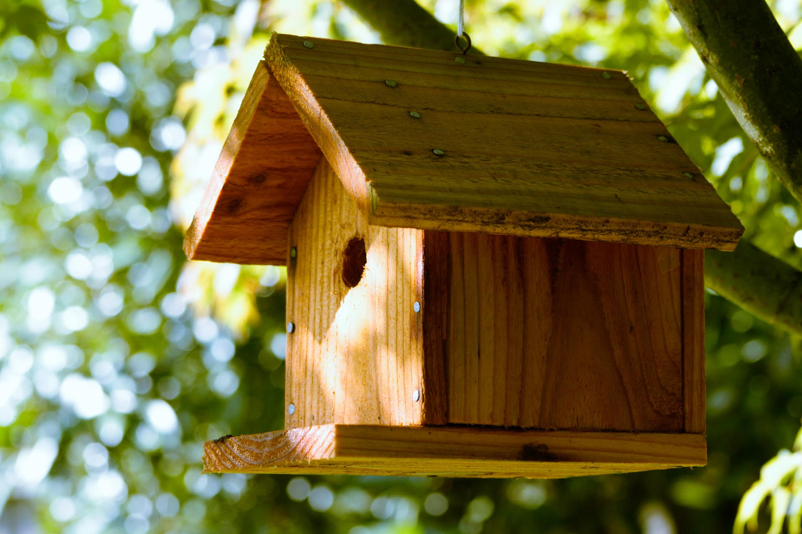
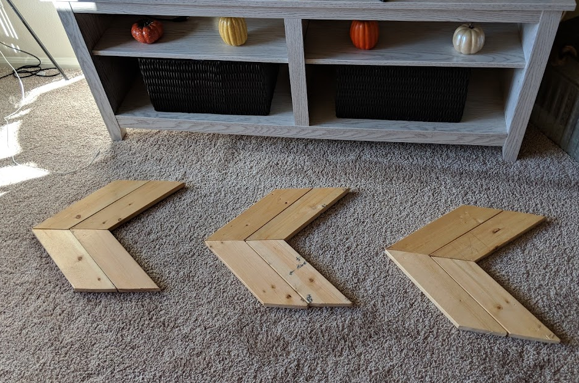
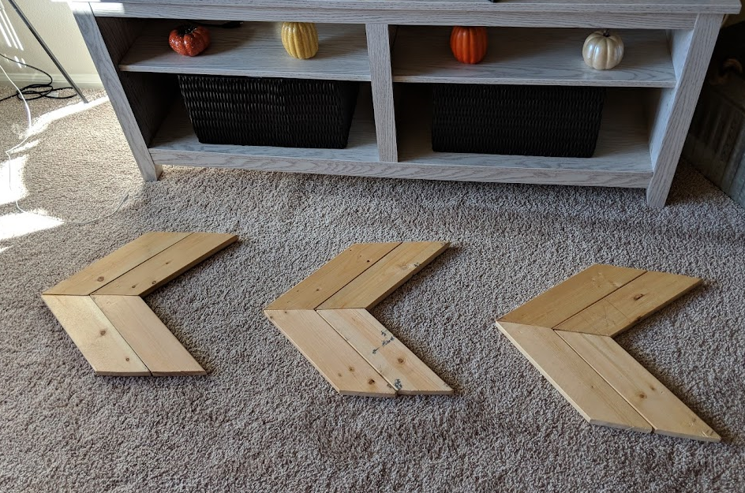

watch & learn, practice with guidance, do it on my own.
Watch |
When I was young, my dad was constantly working around the house doing repairs, renovating, or building something from scratch. One day, he had some extra wood from a previous project and asked if my siblings and I would like a playhouse. Of course we did! This is where my interest in building and creating began. I sat and watched him as he worked with different tools. I asked what he was doing and why he was doing it. As he worked, he took the time to explain the entire process. This is the most critical part of the learning process for me. I want to see how it's done from someone that has experience and understand reasoning behind it.
Practice |
|
I continued to watch and learn the process as my dad worked on things, so that I could begin building too. Another project my dad decided to undertake was a birdhouse for the tree in our front yard. I was still too young to use the power tools, so my dad showed me how to measure the wood and use the chalk reel to mark what needed to be cut. I carefully watched how he would position the wood and the tools as he made the cuts. He showed me how to assemble the pieces and this time I was able to use a hammer to nail it all together. As I entered high school, I wanted to continue learning how to build, which led me to take a woodshop class. I learned more of the basics and how to properly use the power tools. The teacher showed us, step-by-step, how to work with the wood. Each class involved learning from instruction first, then we would be given opportunity to practice that skill. We worked under the direction of the teacher to make a cutting board and a Christmas reindeer. The hands-on practice given in these classes solidified the skills necessary to continue building and creating projects on my own. |

|
Do it |
As I have become an adult, the desire to build and create has never gone away. When I moved to Colorado 7 years ago, my dad gave me a battery powered drill and skill saw. I had a friend that was moving and was getting rid of wooden bed slats used for a platform bed. I realized this could be a good opportunity to make something out of nothing.
As I started brainstorming, I came up with the idea to build an entryway bench for my apartment. I had not built anything like this before, so I started by searching Pinterest to find design ideas. I also used YouTube instructional videos to figure out exactly how to put it together. All the skills I had learned from when I was a child and teenager had not been forgotten. I remembered the basics and the process I needed to follow.
After the entryway bench, I made wall décor for my house, a bench for my parents front yard, a side table for my living room, and a Christmas decoration.
 



For each project I research, I find inspiration and start brainstorming by looking at other creator's projects. I use their ideas to form my own designs. My Pinterest, "Wooden DIY," board shows some of my favorite designs. The YouTube video below is one of the instructional videos I used to create my side table. I also love to get inspiration and instruction from 731 Woodworks.